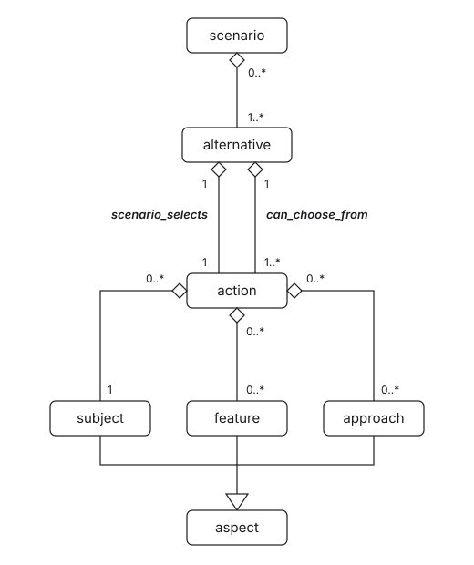
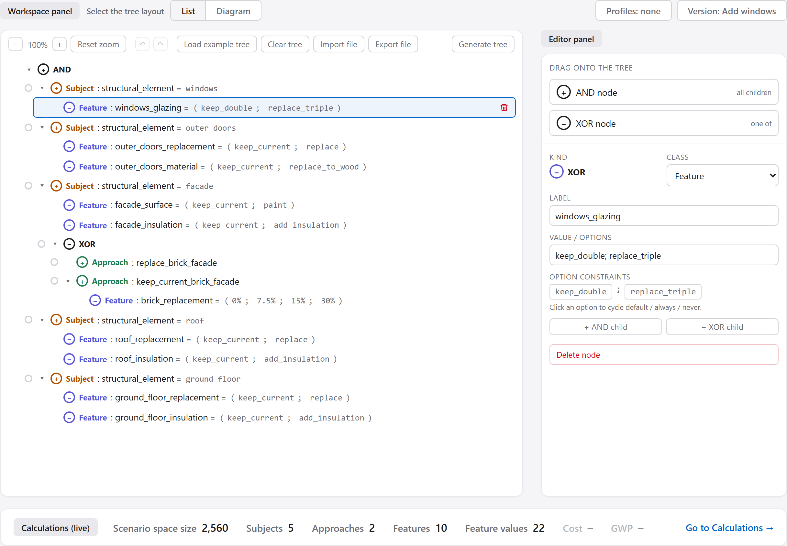
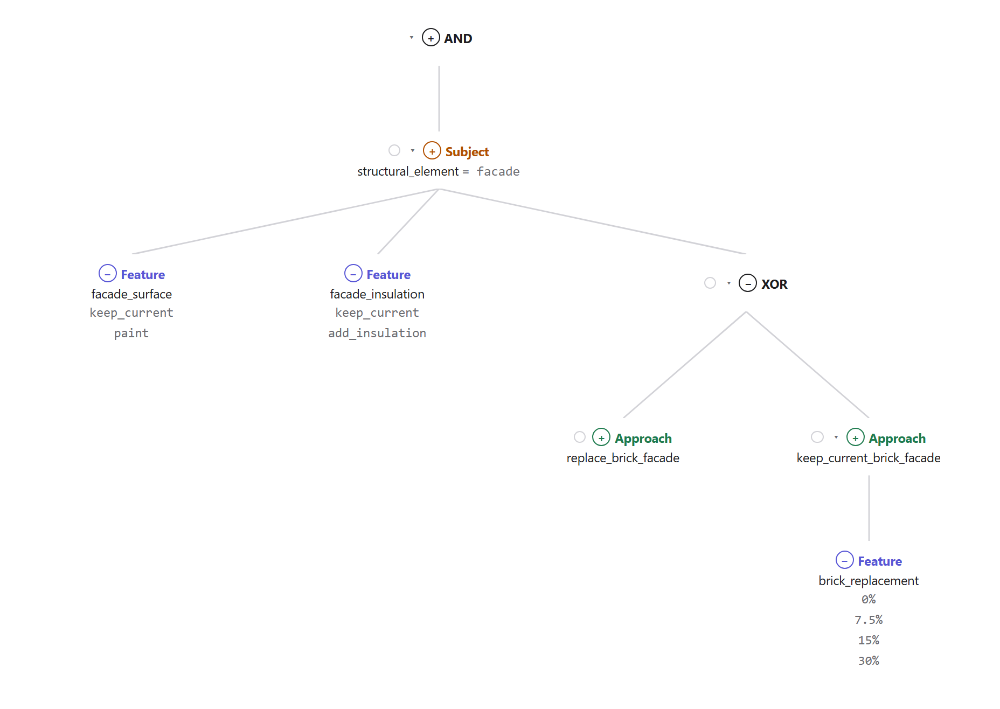
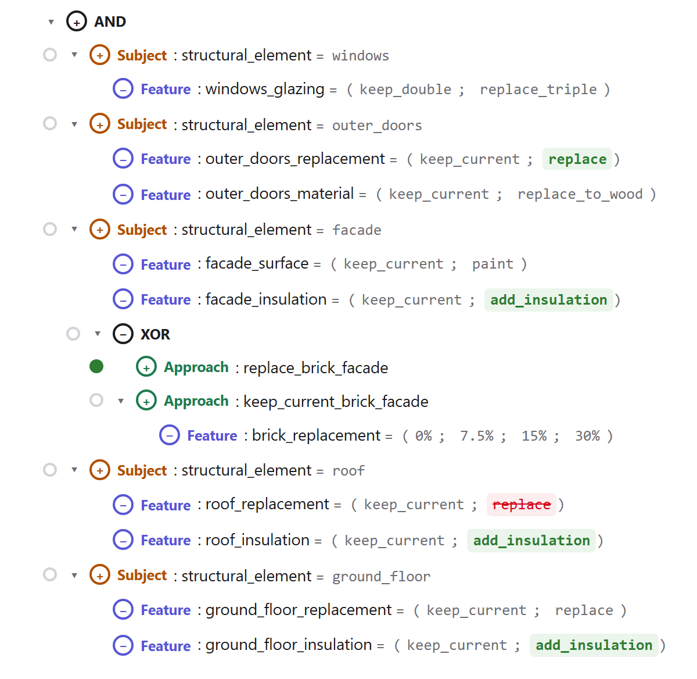
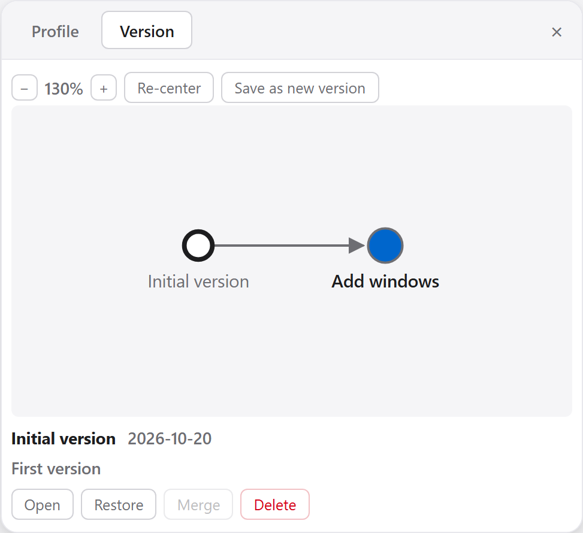
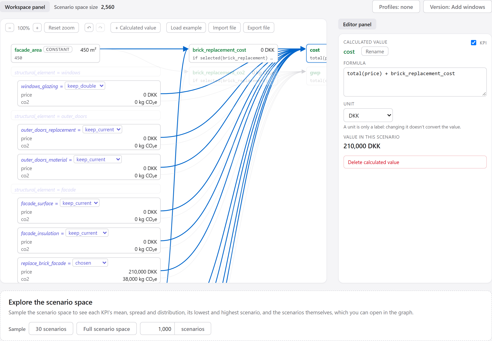
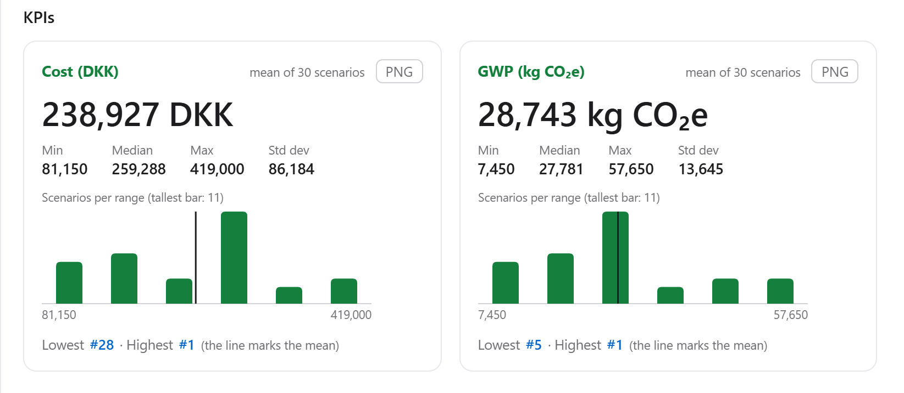

Tutorial
What the tool is for
NovaDM, the Renovation Domain Model, provides a structured, computational environment explicitly designed for formalising building renovation decision support [1]. NovaDM defines six core concepts (they are also in the Glossary):
- Subject: A physical building element being targeted for intervention (e.g., Facade, Roof, Windows).
- Approach: A renovation strategy applied to a given subject (e.g., Maintain, Refurbish, Replace).
- Feature: A parameter of the subject being targeted (e.g., Insulation Thickness, Glazing Type).
Collectively, subjects, approaches and features are aspects of an action.
- Action: a particular renovation intervention with respect to a subject, approach and feature, e.g. “replacing (approach) the opening mechanism (feature) of a door (subject) with a hinged mechanism (feature value)”.
- Alternative: a set of mutually exclusive actions for the same subject (i.e. alternative design choices for a given subject)
- Scenario: a set of mutually consistent actions.

In this editor, the scenarios are described by an action tree. All the scenarios together are the scenario space. Because the choices multiply, it grows very fast: a handful of subjects gives thousands of scenarios, and a real building easily more than 1034.
The editor has two tabs:
- Action tree: build the tree of choices, mark choices that must always or never be made (profiles) and keep versions of your work;
- Calculations: give the options numbers, such as a price and its CO₂, and see what they add up to over many scenarios (The Calculations tab).
Everything runs in your browser; nothing is sent anywhere, and nothing is saved by itself. Your work is kept only when you save it with Export file (Files).
Try it
- Click Back to the editor. The editor opens with an example: a small house with five subjects (windows, outer doors, facade, roof and ground floor).
- Look at the bar at the bottom, Calculations (live): Scenario space size reads 2,560. These five subjects can be renovated in 2,560 different ways.
References
- C. Schultz and A. Kamari, “Exploring the renovation design space: A new iterative approach based on scenario distance metrics and resampling strategies,” Building Simulation, vol. 18, pp. 1515–1542, 2025. doi:10.1007/s12273-025-1267-1
Tips
- Tooltips: rest the pointer on a button, pill, label or box for about a second to see what it does.
- Keyboard: Ctrl+Z undoes and Ctrl+Y redoes (not while typing in a field, where they undo the typing, and not in this tutorial). Esc closes an open list, menu or panel.
- More on screen: Ctrl and minus (Ctrl −) makes the whole page smaller, Ctrl and plus larger, and Ctrl+0 resets it.
- Search: type in Search the tutorial at the top of this page (Enter goes to the next match, Shift+Enter back), or press Ctrl+F to use the browser's own search.
- Save often: nothing is saved by itself, so use Export file before closing or reloading the page.
- Large trees: fold the parts you aren't working on, or use the Diagram layout, which opens zoomed to fit the whole tree.
Glossary
- Action
- A particular renovation intervention with respect to a subject, approach and feature, e.g. “replacing (approach) the opening mechanism (feature) of a door (subject) with a hinged mechanism (feature value)”.
- Action tree
- The data structure that represents a set of scenarios: a tree of AND and XOR nodes.
- Alternative
- A set of mutually exclusive actions for the same subject (i.e. alternative design choices for a given subject).
- AND node (+)
- A node whose children are all part of the scenario.
- Approach
- A renovation strategy applied to a given subject (e.g., Maintain, Refurbish, Replace).
- Aspect
- Subjects, approaches and features, collectively: the aspects of an action.
- Attribute
- A kind of number an option can have, such as a price or CO₂.
- Calculated value
- A value worked out by a formula from the numbers.
- Child, parent
- The nodes directly below a node are its children; it is their parent.
- Constant
- A calculated value whose formula is a single number, such as an area.
- Feature
- A parameter of the subject being targeted (e.g., Insulation Thickness, Glazing Type). In this editor, a Feature node has a choice of options.
- KPI
- Key performance indicator: a calculated value used to compare scenarios, such as Cost or GWP (global warming potential, in CO₂ equivalents).
- Mark (always / never)
- A choice that every scenario must make (always) or no scenario may make (never).
- n/a
- Not available: a value that can't be worked out in a scenario.
- Node
- One part of an action tree: one line in the List layout, one name with its lines in the Diagram layout. A node is AND or XOR, and can have a class, a label and options.
- Option
- One of the choices of a node, such as
keep_currentorreplace. - Profile
- A named set of always/never marks.
- Root node
- The node at the top of the tree.
- Sample
- Scenarios picked at random, every scenario equally likely, to estimate the KPIs.
- Scenario
- A set of mutually consistent actions.
- Scenario space
- All possible scenarios; its size is shown in the bottom bar.
- Subject
- A physical building element being targeted for intervention (e.g., Facade, Roof, Windows).
- Version
- A saved snapshot of the tree, its profiles and its numbers.
- XOR node (−)
- A node of which exactly one child is part of the scenario.
Action trees
An action tree is made of nodes. In the editor, every line of the tree in
the List layout is one node (Figure 2), such as
Feature : windows_glazing = (keep_double; replace_triple). In the
Diagram layout, every name with the lines going to it is one (Figure 3).
Click a node to select it: it gets a blue frame, and the editor panel on the right shows it.
The nodes directly below a node, one step further in in the List layout or joined to it by a
line in the Diagram layout, are its children, and it is their
parent. The node at the very top, which has no parent, is the
root node. In Figure 3, the Subject node
structural_element = facade has three children: two Feature nodes and an XOR
node. The XOR node has two children of its own.

windows_glazing, has a blue frame, and the editor
panel on the right shows it.
facade and its three children,
and the two Approaches below the XOR node.Every node is one of two kinds:
- AND (shown with +): all its children are part of the scenario;
- XOR (shown with −): exactly one of its children is.
All children of one node are of the same kind. A node can also have a
class (Subject, Approach or Feature, each with its own colour), a
label and one or more options. A node with several
options takes exactly one of them in each scenario, for example
windows_glazing = (keep_double; replace_triple).
The scenario space size follows from the tree: the children of an AND multiply, the children of an XOR add up, and a node's options multiply again. In the example, the facade has two features with two options each, and an XOR between replacing the brick facade (1 way) and keeping it with 0%, 7.5%, 15% or 30% of the bricks replaced (4 ways): 2 × 2 × (1 + 4) = 20 ways to renovate the facade. Very large sizes are shown as, for example, 2.35 × 10^23.
The tree can be shown in two layouts, under Select the tree layout: List, an indented list like folders on a computer, and Diagram, boxes joined by lines. Both show the same tree. The small triangle in front of a node folds its children away and back. The zoom buttons (−, +, Reset zoom) change the size.
The bottom bar counts the tree's Subjects, Approaches, Features and Feature values (all the options of all Feature nodes added up).
Try it
- Next to Select the tree layout, click Diagram, then List again.
- Click the triangle in front of
Subject : structural_element = facadeto fold it, and again to unfold it. - Find the XOR node under the facade. Its two children are Approaches, so each scenario either replaces the brick facade or keeps it.
Starting a tree
An empty tree shows the three ways to start:
- Drag a node. Drag AND node or XOR node from Drag onto the tree in the editor panel onto the empty tree. It becomes the root node, the node at the top. A full tree has an AND root node; an XOR root node lets you explore one part on its own.
- Open a tree. Load example tree opens the example
again. Import file opens a
.jsonfile: one you saved, or one from theexamplesfolder (Files). - Generate tree. Pick subjects from a checklist and get one Subject node for each in one go.
Generate tree opens a panel with a Subject list switch and the renovation depth. The two subject lists are the Danish Energy Agency's renovation measures and the 32 renovation alternatives of the NovaDM paper. The depth, Minor, Moderate, Deep or Whole building, decides which subjects can be ticked: each depth also allows the subjects of the depths before it. Select all and Clear tick or untick every subject. The panel's own Generate tree button replaces the tree with an AND root node holding one Subject node per ticked subject; your profiles and versions stay, and you can undo it.
Clear tree removes the whole tree, and the Calculations tab starts over too. Load example tree, Clear tree and Import file ask first when you would lose work.
Try it
- Click Generate tree at the right of the tree's toolbar.
- Choose Moderate, tick three subjects and click the panel's Generate tree.
- Click the undo button (↶) in the toolbar to get the example back.
Editing
Click a node to select it. The editor panel on the right then shows its
Kind (AND or XOR), its Class, its Label
and its Value / options. Separate several options with a semicolon:
keep_current; replace.
A Subject node is picked from a menu instead (category › subject), with the same Subject list switch as Generate tree at its top. Its last entry, + Custom subject, lets you type your own label and value.
- Add a child: + AND child or − XOR child in the editor panel, or drag AND node or XOR node from the editor panel onto a node. Dropped on an empty part of the tree area, it goes to the end of the top level, under the root node, and you can move it from there.
- Move a node: drag it onto its new parent; it becomes that node's last child. Dropped on an empty part of the tree area, it goes to the end of the top level. A short red flash means the move isn't allowed, for example an AND among XOR siblings.
- Delete a node: click the red trash icon on the selected node, or the delete button in the editor panel. Its children go with it.
- Rename: when you change a label or an option, its numbers in the Calculations tab move with it, and so do the formulas that use the label.
- Undo and redo: the arrow buttons (↶ ↷) in the toolbar, or Ctrl+Z and Ctrl+Y. They cover every change: the tree, profiles, versions and the numbers, up to 100 steps.
Try it
- Click the node
Feature : windows_glazing. - In Value / options, add
; replace_doubleat the end. The scenario space size grows from 2,560 to 3,840. - Click outside the field, then click undo (↶).
Profiles
Often some choices are already made: the roof must be insulated, or the doors may not be replaced. You mark such choices as always or never:
- a node with at most one option has a small dot in front of it;
- a node with several options has a chip per option instead.
Click a dot or chip to go from open (white) to always (green) to never (red) and back to open. An always mark keeps only the scenarios with that choice, a never mark only those without it, and the scenario space size shrinks to match. A never mark under an AND leaves that part out. Marks that can't all hold, such as two always marks under one XOR, give a size of 0 and the warning "the applied constraints are contradictory".

replace_brick_facade) and four green
chips mark choices that every scenario makes.A profile is a named set of marks, such as "Low budget". The Profiles pill at the top right ("Profiles: none" when no profile is loaded) opens the list: Save profile saves the marks on screen, a profile's name loads it, its trash icon deletes it, and Clear marks / Deselect profile removes every mark from the screen (saved profiles stay).
Profiles belong to the version on screen and are kept in it at once, without making it "unsaved". The Calculations tab uses the marks on screen as well and shows them, but marks are set on the Action tree tab only.
Try it
- Click the Profiles: none pill, then Energy upgrade. The size drops from 2,560 to 32.
- Click Clear marks / Deselect profile, then click anywhere outside the list to close it.
- Click the chip
replaceafterroof_replacementtwice, so it turns red (never). The size halves to 1,280: the roof is never replaced.
Versions
A version is a snapshot of the whole document: the tree, its profiles and its numbers in the Calculations tab. Versions let you try something without losing what you had, much like saving a copy of a drawing before changing it. The Version pill at the top right names the version on screen and adds "· unsaved" when the tree or the numbers have changed since it was saved.
The pill opens the version history: a small graph, with a line from each version to the one it was based on. Click a version to see its details: when it was saved, its comment and what changed. Then:

- Save as new version saves what is on screen as a new version on top of the current one, with a name and an optional comment;
- Update this version stores the changes in the current version. Once other versions are based on it, its tree can't change any more (save a new version instead), but its numbers still can;
- Open shows another version;
- Restore makes a new version with the contents of an older one;
- Merge brings the changes of the selected version into the current one. It first shows what it would change. Where both versions changed the same thing differently (a conflict), your current version is kept;
- Delete removes a version other than the current one.
When you save a corrected number, the editor offers to correct it in the other versions that still hold the old number. Versions can't be renamed.
Try it
- Click the Version: Add windows pill. The example has two versions: "Initial version" and "Add windows".
- Click "Initial version" in the graph, then Open. The windows are gone from the tree.
- Click "Add windows", then Open to get them back.
Files
Export file saves the whole document as a .json file: every
version with its tree, profiles and numbers. Import file opens such a
file and replaces what is on screen. Both buttons are on both tabs. If the version on
screen has unsaved changes, Export file asks first and stores them in that version.
A .json file is plain text, so you can open it in a text editor such as
Notepad, change it and import it again. The editor checks the file and tells you what is
wrong if it can't open it. Keep a copy before editing by hand. Files from older versions
of the editor still open.
Near the top of the file, the "source" line says where the tree or its numbers
come from, for example a company or a research project. It is empty in a new file; fill it
in by hand, and it shows under the tree.
The examples folder next to index.html holds:
sample-tree.json: the example the editor opens with;sample-tree-with-u-value.json: the same, with a U-value as a third KPI (Formulas);k45-case.jsonandk45-full-case.json: a real case, K45, in one version and in all its versions;full-tree.json: a full NovaDM tree;novadm-action-tree.jsonandversion-history-test.json: small trees with a version history to explore.
Try it
- Click Export file and save the file.
- Open it in a text editor, find
"source": ""and type a text between the quotes, such as"source": "Made-up numbers for training". Save it. - Click Import file and open the file. Your text shows under the tree.
The Calculations tab
The Calculations tab puts numbers on the tree in the Action tree tab, so you can compare scenarios on, for example, cost and CO₂. It always follows that tree and its always/never marks.
The graph shows one scenario. Every node with a label has a box with a drop-down of its options; picking an option changes the scenario on screen. A greyed-out box is not part of it. Calculated values stand to the right, with arrows from everything they use. Click a box or a calculated value to edit it in the editor panel; it also highlights what it uses and what uses it.

cost selected: the arrows show everything its formula uses, and the editor
panel shows the formula, the KPI box and its value in the scenario on screen.
- Attributes are the kinds of numbers an option can have, such as
priceandco2. A box's table in the editor panel has a row per option and a column per attribute: type the numbers there (a decimal comma or a decimal point both work). + Attribute adds an attribute, and the trash icon in the Units list removes one. - Units, such as DKK or kg CO₂e, are labels only: changing DKK to EUR converts nothing.
- + Calculated value adds a value worked out by a formula. Tick KPI to make it a key performance indicator, shown in the report and in the bottom bar. Rename asks for its name in formulas, then for the name shown in the report. A value whose formula is a single number is marked constant. The trash icon on its box deletes it.
Explore the scenario space, below the graph, works out the KPIs for many scenarios at once. Under Sample, choose 30 scenarios, Full scenario space (every scenario, up to 3,000) or your own number. The report then shows a card per KPI, with its mean, lowest, median and highest value, the spread and a chart of how the values are spread, and a table of the scenarios, 100 per page. Click the # heading or a KPI's heading to sort, and a scenario's number to show it in the graph. The × closes the report.
The report can be saved: Export table as CSV for a spreadsheet, PNG on each card for an image, and Save report as PDF (in the print dialog, choose "Save as PDF").

Back on the Action tree tab, the bottom bar shows each KPI's mean over the sample: Estimated after a random sample, Exact mean after the full scenario space, and "–" before any sample. It follows every change to the tree. The numbers belong to the version on screen.
Try it
- Open the Calculations tab.
- In the box
roof_insulation, pickadd_insulation. The calculated valuecostgoes up by 36,000 DKK. - Under Explore the scenario space, click 30 scenarios. The report opens below the graph.
- Go back to the Action tree tab: the bottom bar now shows Cost and GWP as estimates.
Formulas (for super users)
A calculated value is worked out by its formula, typed in the editor panel. The value is worked out again on every keystroke; an error shows in red under the formula, and notes in grey. A formula combines three kinds of names:
- a label of a node in the tree, which stands for the option chosen in the scenario;
- an attribute, such as
price; - another calculated value, by its name.
What you can write
| You write | It means | Example |
|---|---|---|
| a number | that number | 450 |
+ - * / and ( ) | arithmetic | (a + b) * 2 |
| a calculated value's name | its value | facade_area |
| a label | the option chosen for it, read as a number where it can be
(7.5% is 0.075) | brick_replacement |
label.attribute | that label's number for the chosen option | roof_insulation.price |
total(attribute) | the attribute added up over every node in the scenario | total(price) |
selected(label) | true when a node with that label is in the scenario | selected(brick_replacement) |
'text' | a text, to compare with an option | roof_replacement = 'replace' |
= < > | a comparison: equal, less than, greater than | facade_area > 400 |
if … then … else … | a choice | if selected(x) then 1 else 0 |
- in front | minus | -5 |
Multiplication and division go before addition and subtraction, and comparisons come
last; use brackets when in doubt. Keywords (if, then,
else, total, selected) can be written in any case;
names must match exactly.
The example's formulas
facade_area = 450
brick_replacement_cost = if selected(brick_replacement)
then brick_replacement * facade_area * 180
else 0
cost (KPI, DKK) = total(price) + brick_replacement_cost
gwp (KPI, kg CO₂e) = total(co2) + brick_replacement_co2
brick_replacement sits under an XOR, so it isn't in every scenario. That is
why its cost is guarded with selected(…): without the guard, the cost
would be n/a in the scenarios that replace the whole facade.
When something is missing: n/a
A value is n/a (not available) for a label that isn't in the scenario, a
missing number, a text used in arithmetic, or a division by zero. Arithmetic with n/a
gives n/a, a comparison with n/a is false, and an if whose condition is n/a
takes the else part. total() skips nodes without a number, and
is 0 when no node in the tree has one yet.
A name that is neither a calculated value nor a label in the tree is not an error: it counts as not chosen, and a grey note says "Not in the tree: …". So the example's formulas keep working on any tree, but a misspelt label gives n/a without a red error.
Errors
An error shows in red, and the value, and every value that uses it, reads "error":
- a mistake in the writing, with its position in the formula;
- a loop, such as
ausingbwhilebusesa; - an attribute used on its own, or an unknown attribute after a dot or in
total(); - a calculated value inside
selected()or before a dot; - a formula too long or too deeply bracketed to work out.
Names and renaming
- Names use letters (from any alphabet, so
væggeworks), digits and_, don't start with a digit and aren't keywords. No hyphens or spaces:U-valuewould read asUminusvalue. The name shown in the report, set with Rename, can be any text. - Renaming a calculated value changes it in every formula that uses it.
- Renaming a label in the Action tree tab changes it in the formulas too, but a text in
quotes, such as
'replace', is never changed. Picking another subject in the Subject menu changes no formula.
The precise rules
For the curious, the complete grammar of a formula:
expr = "if" expr "then" expr "else" expr | compare
compare = sum [ ("=" | "<" | ">") sum ]
sum = product { ("+" | "-") product }
product = unary { ("*" | "/") unary }
unary = "-" unary | primary
primary = number | text | name [ "." name ]
| ("total" | "selected") "(" name ")" | "(" expr ")"
Try it: a U-value as a KPI
The file sample-tree-with-u-value.json adds the building's U-value to the
example. Each element (wall, roof, ground floor) gets
1 / (Rsi + R_existing + total(r_…) + Rse), the windows a U-value of
their own, and the KPI u_value is the mean of the elements weighted by
their areas.
- Click Import file and open
examples/sample-tree-with-u-value.json. - In the Calculations tab, leave every box on
keep_currentorkeep_double:wall_ureads 1.49, from1 / (0.13 + 0.5 + 0.04), andu_value1.36 W/m²K, the existing building. - Pick
add_insulationfor the facade, roof and ground floor insulation, andreplace_triplefor the glazing:u_valuedrops to 0.29 W/m²K. - Click 30 scenarios: the U-value card shows values between those two.